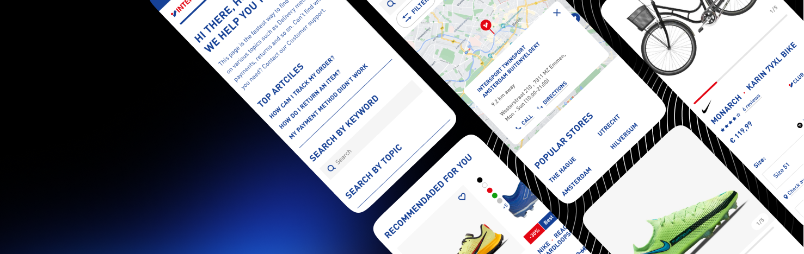

Hey, I'm Yulia. I'm a Product Designer with a focus on Design Systems and crafting experiences at scale.
Case studies

Design system "The Heart" - building a scalable framework.

Checkout process - simple purchasing, regardless online or offline.

Building a co-browsing expereince.
Hello
I thrive on creating designs that are expressive, intentional and kind to people interacting with it.
My mission is to create scalable experiences and design languages, that enable others across the organisation to connect with the users.
Currently, I’m a Senior Designer at Intersport where I focus on designing and adopting our Design System, The Heart.